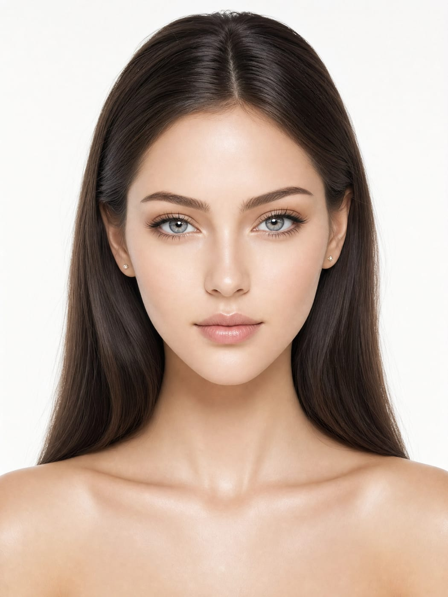
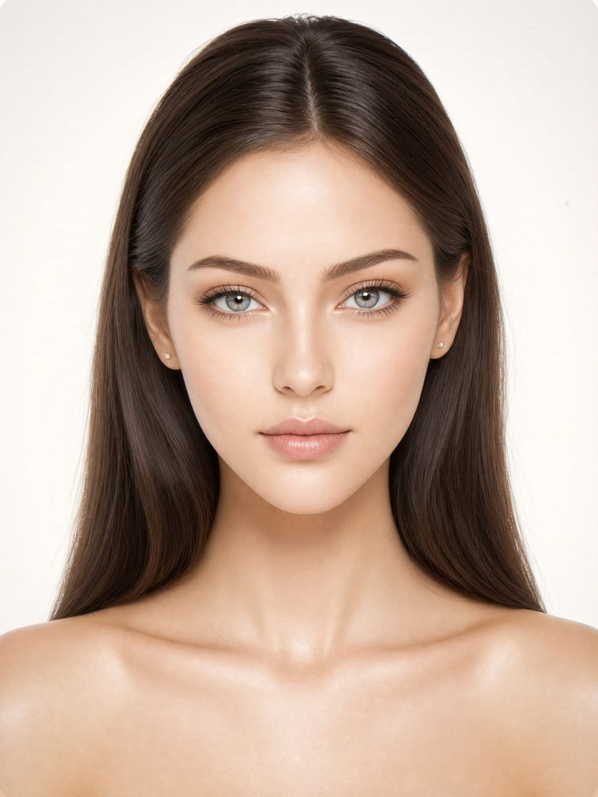
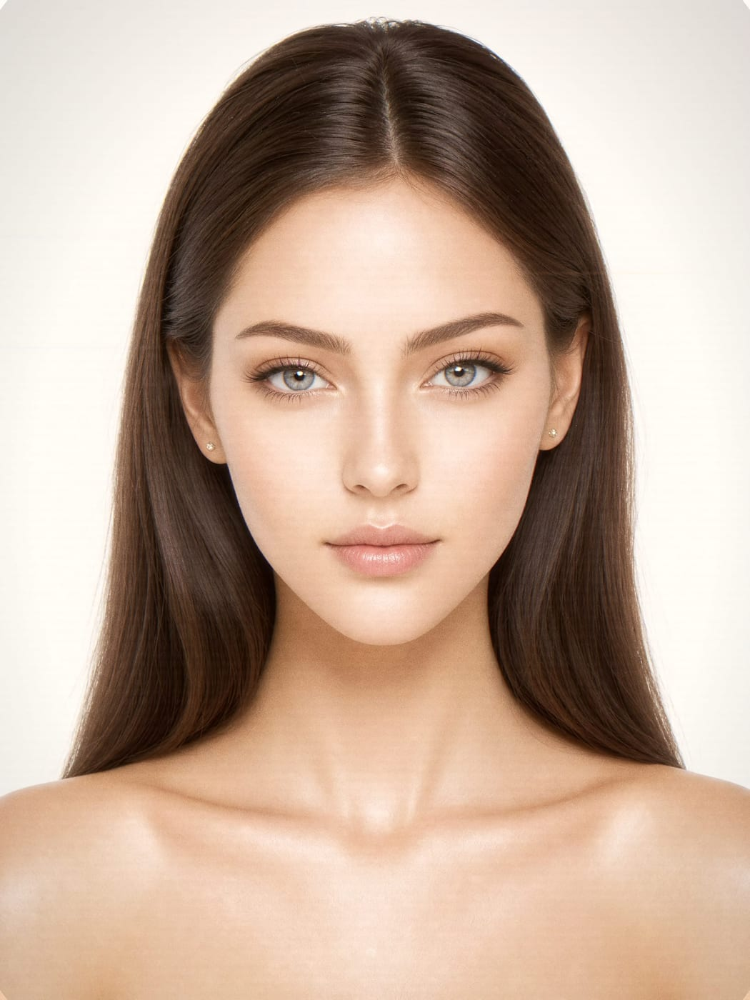
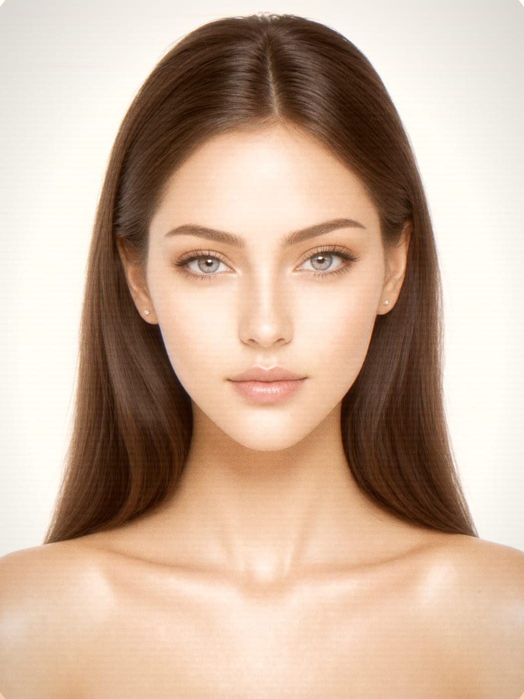
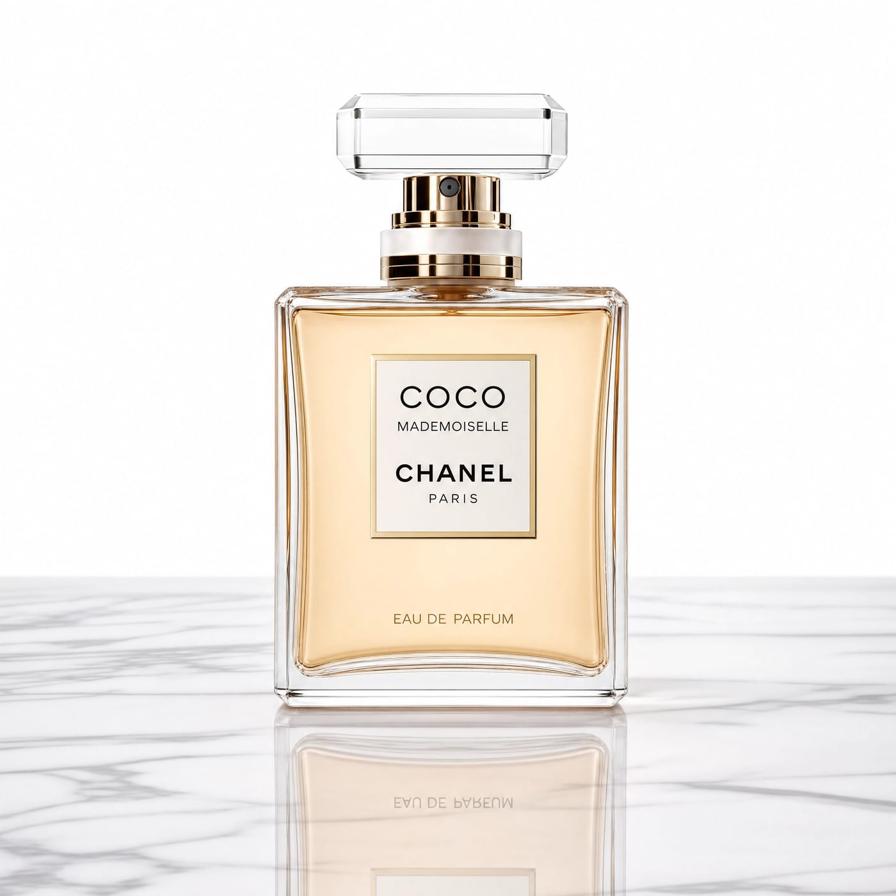
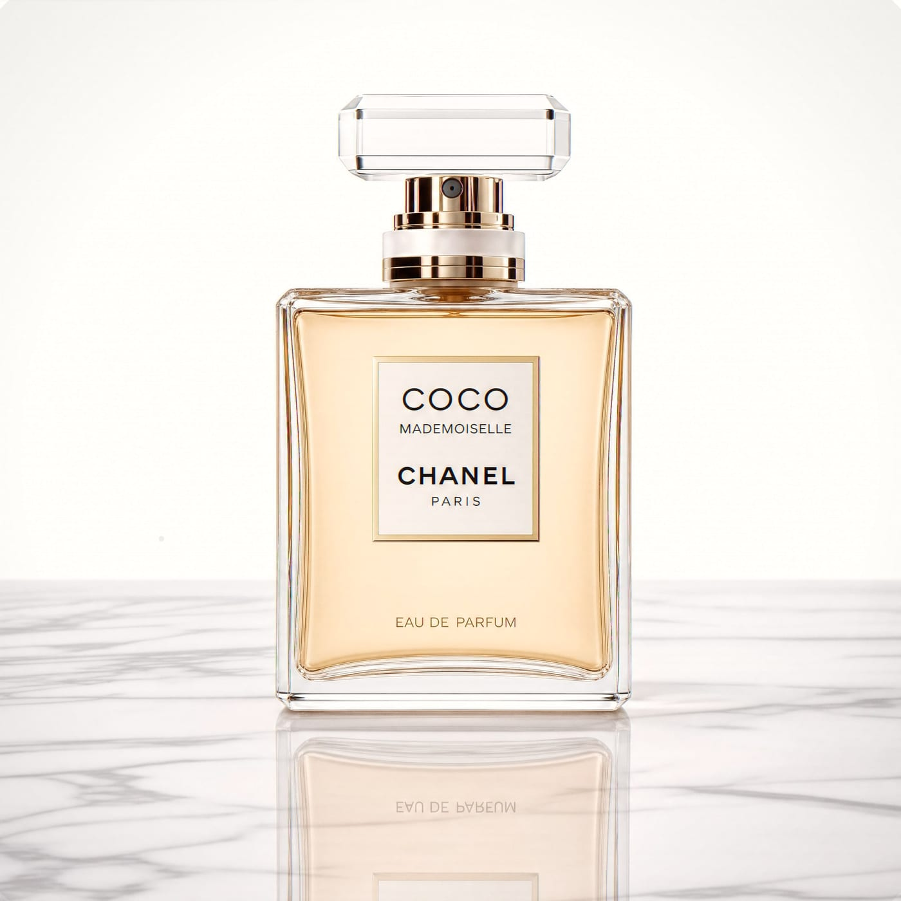
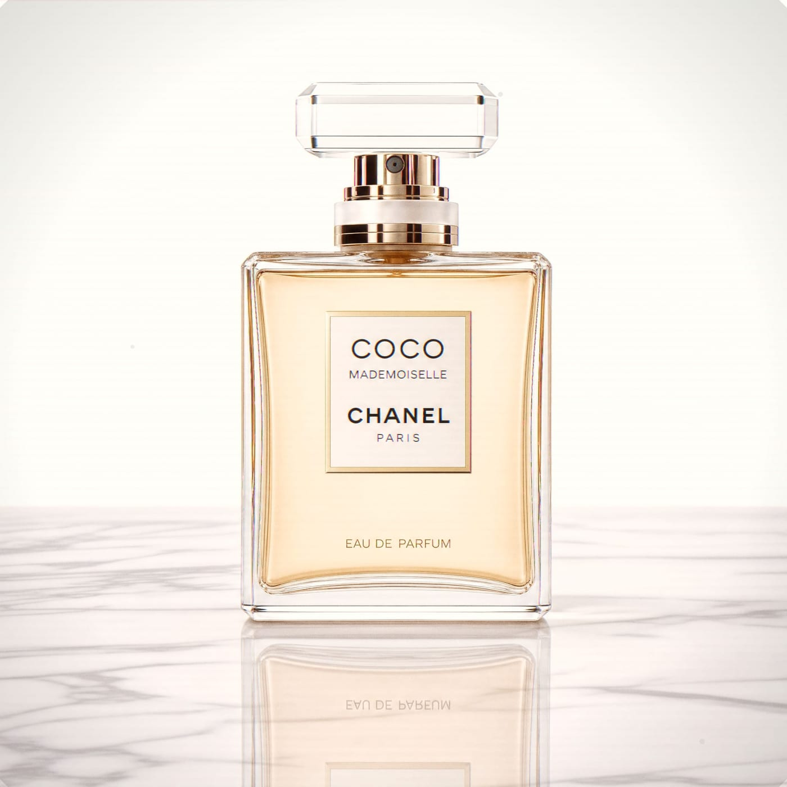
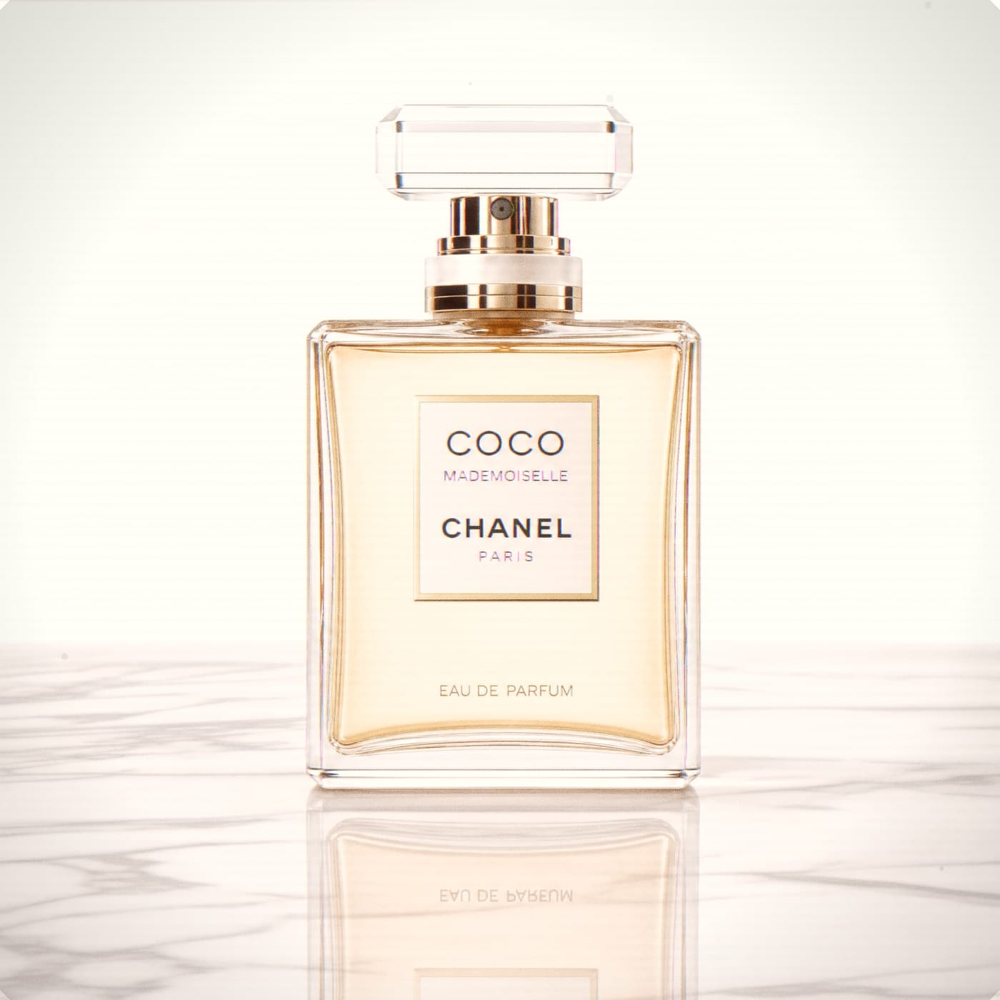

A side-by-side look at what AuthentiGen's humanizer actually does to three real test subjects — a portrait, a product shot, and a landscape — scored honestly, with the pipeline's limits stated plainly.
Real, deterministic pixel processing that layers in camera & film characteristics — not AI regeneration. Each effect scales with intensity. Values below are the actual pipeline parameters.




1 2 3 4| Level | Skin realism | Background naturalness | Overall camera feel | Avg |
|---|---|---|---|---|
| Original | 3 |
2 |
2 |
2.3 |
| Light | 5 |
6 |
5 |
5.3 |
| Medium | 7 |
7 |
7 |
7.0 |
| Heavy Winner | 8 |
8 |
9 |
8.3 |
Heavy wins. Filmic grain and warmth flatter skin and the 35 mm bloom suits faces — and a portrait has no crisp type or hard edges for the aberration to spoil.



1 2 3 4
!| Level | Surface realism | Background naturalness | Overall camera feel | Avg |
|---|---|---|---|---|
| Original | 3 |
3 |
3 |
3.0 |
| Light | 6 |
6 |
6 |
6.0 |
| Medium Winner | 8 |
8 |
8 |
8.0 |
| Heavy | 6 |
7 |
6 |
6.3 |
Medium is the sweet spot. It adds believable warmth, vignette and grain without damage — while Heavy's chromatic aberration visibly fringes the crisp label type and reads as degraded.
| Level | Texture realism | Atmosphere naturalness | Overall camera feel | Avg |
|---|---|---|---|---|
| Original | 4 |
4 |
3 |
3.7 |
| Light | 6 |
6 |
6 |
6.0 |
| Medium | 7 |
8 |
7 |
7.3 |
| Heavy Winner | 8 |
8 |
9 |
8.3 |
Heavy wins again. Like the portrait, this is an organic subject with no crisp type — so the heavier grain and warm bloom add the most convincing filmic character without a downside.
Grain + warmth flatter skin; no crisp edges to fringe. The 35 mm profile is made for faces.
Believable lens character without over-texturing — Heavy's aberration degrades crisp label type.
Big organic gradients take heavy grain and sun bloom well, for the most photographic look.
The humanizer reliably adds believable camera & film character across portraits, products and landscapes, with a clear best setting per subject. It makes no claim to repair structural AI artifacts, and the limitations are documented. Good to ship.